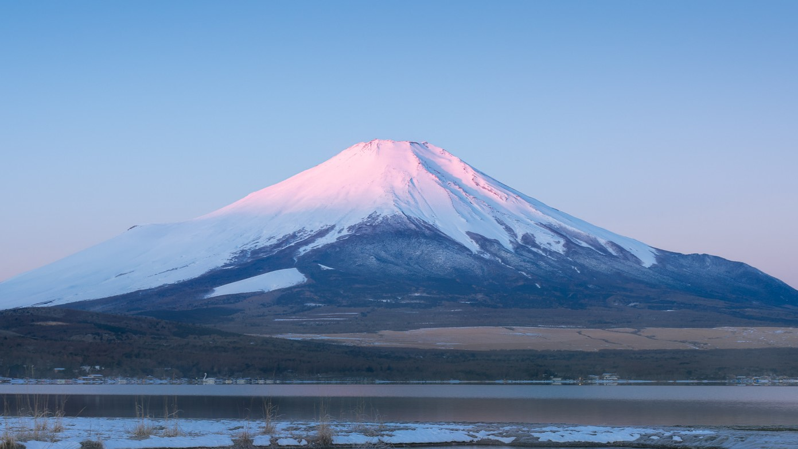
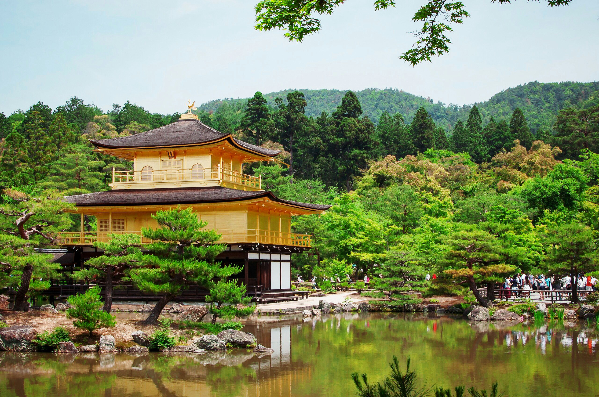
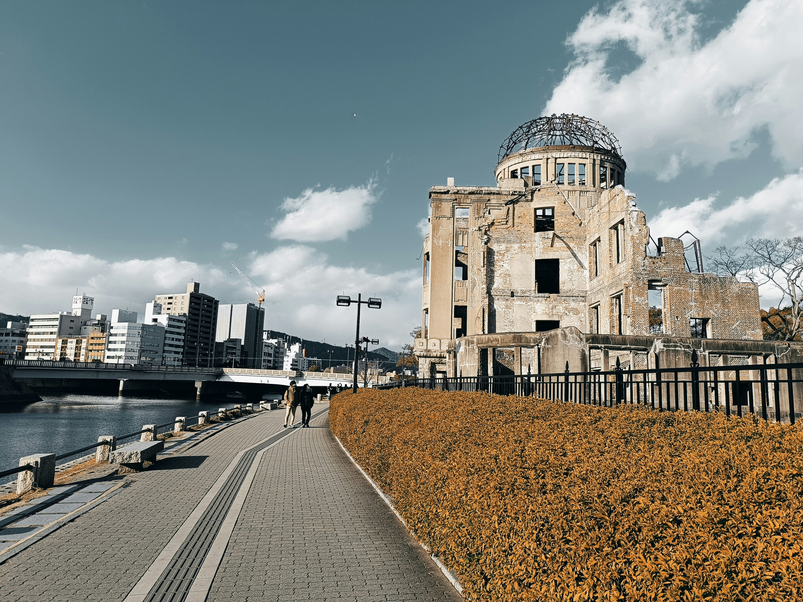

Fushimi Inari-Taisha
[Kyoto]

Der Fushimi Inari-Taisha ist einer der bekanntesten Schreine Japans und besonders für seine endlosen, leuchtend roten Torii-Tore bekannt. Diese Tore bilden beeindruckende Tunnel, die den Berg Inari hinaufführen. Der Schrein ist dem Shinto-Gott Inari gewidmet, der als Schutzpatron der Reisbauern und Kaufleute gilt.
Ein Spaziergang durch die Torii ist ein einzigartiges Erlebnis, besonders bei Sonnenaufgang oder Sonnenuntergang, wenn das Licht durch die roten Bögen fällt. Der Weg führt auf den Berg Inari, wo kleinere Schreine und Statuen von Füchsen, den Boten des Inari-Gottes, zu sehen sind. Der Aufstieg dauert etwa zwei Stunden, bietet aber wunderschöne Aussichten über Kyoto. Viele Besucher hinterlassen kleine Torii als Spende oder Gebet. In der Nähe gibt es auch traditionelle Teehäuser und Stände, die regionale Spezialitäten wie Inari-Sushi anbieten. Wer sich für japanische Spiritualität und Kultur interessiert, sollte diesen Ort unbedingt besuchen.
Mount Fuji
[Tokyo]
Der Mount Fuji ist mit 3.776 Metern der höchste Berg Japans und ein weltweit bekanntes Symbol des Landes. Er ist sowohl ein aktiver Vulkan als auch ein heiliger Ort in der japanischen Kultur. Besonders im Sommer erklimmen zahlreiche Wanderer den Berg, um den atemberaubenden Sonnenaufgang vom Gipfel aus zu erleben.
Der Fuji ist Teil des Fuji-Hakone-Izu-Nationalparks und kann von vielen Orten aus bewundert werden, darunter die berühmten Fuji Five Lakes (Fujigoko). Besonders beliebt ist der Kawaguchi-See, der bei klarem Wetter eine perfekte Spiegelung des Berges im Wasser zeigt. Wer nicht wandern möchte, kann den Berg von verschiedenen Aussichtspunkten, wie der Chureito-Pagode oder Hakone, bewundern. Im Winter ist der Gipfel mit Schnee bedeckt, was das klassische Bild von Fuji-san prägt. Es gibt auch zahlreiche heiße Quellen (Onsen) in der Umgebung, die eine perfekte Möglichkeit bieten, nach einer anstrengenden Wanderung zu entspannen. Der Mount Fuji inspiriert seit Jahrhunderten Künstler und Dichter und bleibt eine der faszinierendsten Sehenswürdigkeiten Japans.
Kinkaku-ji
[Kyoto]
Der Kinkaku-ji, auch bekannt als Goldener Pavillon, ist eines der berühmtesten Wahrzeichen Kyotos. Seine goldene Fassade spiegelt sich malerisch im umgebenden Teich wider. Ursprünglich als Villa für einen Shogun erbaut, wurde er später in einen Zen-Tempel umgewandelt.
Der Tempel ist von einem wunderschönen Garten umgeben, der die Jahreszeiten auf besondere Weise widerspiegelt – im Frühling blühen Kirschbäume, im Sommer leuchtet das Grün, im Herbst färben sich die Blätter rot und im Winter bietet der verschneite Pavillon eine traumhafte Kulisse. Der Kinkaku-ji ist eines der bekanntesten Motive der japanischen Kultur und zieht täglich viele Besucher an. Der dazugehörige Garten ist im Stil der Muromachi-Ära gestaltet und bietet zahlreiche kleine Brücken, Steine und Teiche, die eine harmonische Atmosphäre schaffen. In der Nähe des Tempels gibt es traditionelle Teehäuser, in denen man eine japanische Teezeremonie erleben kann. Ein Besuch hier vermittelt einen Einblick in die Ästhetik und Philosophie des Zen-Buddhismus.
Shibuya Crossing
[Tokyo]

Die Shibuya-Kreuzung ist eine der geschäftigsten Kreuzungen der Welt. Hunderte von Menschen überqueren sie gleichzeitig aus allen Richtungen. Umgeben von riesigen Bildschirmen, Geschäften und Restaurants ist sie ein Symbol für das moderne, pulsierende Tokio.
Diese Kreuzung wird oft als "organisiertes Chaos" beschrieben, denn trotz der großen Menschenmengen läuft alles geordnet ab. Sie ist ein beliebtes Fotomotiv und in vielen Filmen und Serien zu sehen. In unmittelbarer Nähe befindet sich die berühmte Hachiko-Statue, die an den treuen Hund erinnert, der jahrelang auf sein Herrchen wartete. Die Gegend rund um Shibuya ist ein Hotspot für Shopping, Essen und Nachtleben. Zahlreiche Kaufhäuser, trendige Boutiquen und Restaurants bieten alles, was das Herz begehrt. Am Abend erstrahlt Shibuya in bunten Neonlichtern, die der Stadt ein futuristisches Flair verleihen. Ein Besuch in einer der Sky-Bars in den Hochhäusern rund um die Kreuzung bietet eine spektakuläre Aussicht auf das Lichtermeer der Stadt.
Peace Memorial Park
[Hiroshima]
Der Hiroshima Peace Memorial Park erinnert an die Opfer des Atombombenabwurfs von 1945. Das Herzstück des Parks ist der Atombombendom, ein erhaltenes Gebäude aus der Explosion. Das Friedensmuseum und zahlreiche Denkmäler laden zum Nachdenken und Gedenken ein.
Der Park wurde auf dem Epizentrum der Explosion errichtet und soll ein Zeichen für Frieden und den Wunsch nach einer atomwaffenfreien Welt setzen. Besucher können im Hiroshima Peace Memorial Museum mehr über die Geschichte der Stadt und die Auswirkungen der Bombe erfahren. Besonders bewegend sind die persönlichen Geschichten der Überlebenden, die sogenannten Hibakusha. Eine der bekanntesten Sehenswürdigkeiten im Park ist die Kinder-Friedensstatue, inspiriert von Sadako Sasaki, einem Mädchen, das nach der Explosion an Leukämie erkrankte und tausend Papierkraniche faltete, um gesund zu werden. Jedes Jahr werden hier neue Kraniche als Zeichen des Friedens niedergelegt. Der Park ist ein emotionaler Ort, der Besucher zum Nachdenken anregt und die Bedeutung des Friedens aufzeigt.